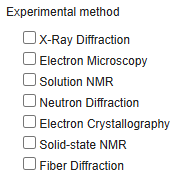
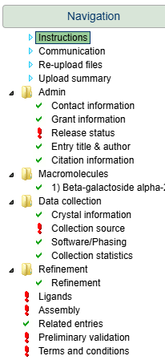
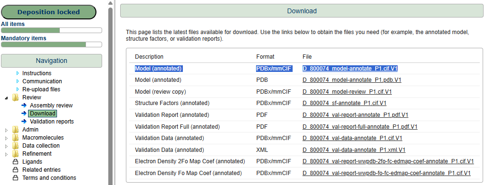

This guide explains how to extract selected metadata from an mmCIF file into a new metadata-only file, or merge that metadata into an existing model file, using the PDBe mmCIF Metadata Importer.
1. What this tool does
The importer copies metadata you select from an input mmCIF file. You can produce either a standalone metadata file or a merged file that combines imported metadata with an existing target mmCIF. Which categories are copied is controlled by specification sets (X-ray, EM, NMR, citation, authors, and others).
2. Before you start
Have ready:
- An input file:
*.cifor*.cif.V[ordinal] - Optionally, a merge target: another
*.ciffile - At least one specification choice: method-specific (X-ray, X-ray serial, EM, NMR) and/or optional groups (macromolecules, citation, authors, funding, keywords)
3. Streamlining depositions with OneDep
A practical workflow is to complete one fully annotated deposition first, then use the resulting annotated file as the metadata template for additional related files.
Streamlining depositions workflow
-
Log in to OneDep with your ORCID account.
Step 1: Authenticate with ORCID to start your deposition session.
-
Select your country in the deposition setup form.
Step 2: Choose the country for the deposition details.
-
Select your experimental method.

Step 3: Pick the method that matches your structure determination workflow.
-
Click Start Deposition.
Step 4: Click Start Deposition to create the deposition record.
-
Upload your file in the deposition interface, complete all metadata fields, and submit.

Step 5: Complete metadata and submit your deposition.
- Wait for your entry to be annotated by one of our biocurators. You will receive an email when the annotation is complete.
-
Download the metadata-rich annotated file Model (annotated) in PDBx/mmCIF format from the Download page in the deposition interface.

Step 7: Download your annotated file when it is ready.
- Use that annotated file as the metadata source/template in this importer ("input.cif" in the importer), and copy metadata into your other files ("other_file.cif" in the importer).
- Upload the merged file into a new deposition. This will pre-fill almost all sections in the deposition interface, so you only need to review and complete any remaining fields.
4. Run the metadata importer
- Command line — scripting and batch runs.
- Web app — form with uploads; good for most users.
- Jupyter notebook — interactive widgets; no separate server.
4-a. Command line
Install dependencies from the repository root:
pip install -r requirements.txtBasic pattern:
python import_metadata.py <input_file> [flags]Examples
# X-ray metadata
python import_metadata.py input.cif --xray
# EM plus optional metadata
python import_metadata.py input.cif --em --macromolecules --citation
# Custom output name
python import_metadata.py input.cif --nmr -o my_output.cif
# Merge into an existing file
python import_metadata.py input.cif --xray --merge_to_file target.cif
# Detailed log
python import_metadata.py input.cif --xray --log4-b. Web app
Start the server
From the repository root (after installing dependencies):
cd web_app
pip install -r requirements.txt
python app.pyOpen http://localhost:5000 in your browser.
Use the form
- Upload your input mmCIF file (required).
- Optionally upload a merge file if you want metadata merged into an existing model.
- Select specifications: pick method-specific options that match your experiment type, and any optional groups.
- Optionally set a custom output filename and enable Generate log file.
- Click Import metadata.
Results download as a ZIP containing the output .cif and, if requested, a .log file.
web_app/app.py).
4-c. Jupyter notebook
pip install -r requirements-notebook.txt
jupyter notebookOpen metadata_import.ipynb, run all cells, then use the widgets to upload files, choose specifications, and run the import. Outputs are written under notebook_output/.